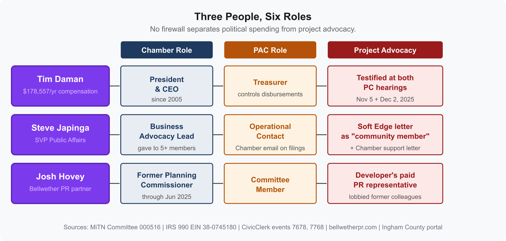

Lansing: How the Chamber's PAC Shapes Who Governs and What Gets Built
The Chamber's website now links directly to the paid advocacy platform that generated the Deep Green template letters. See update below.
LANSING, Mich. -- The Lansing Regional Chamber of Commerce operates a political action committee, LRC-PAC (MiTN Committee 000516), that has contributed a cumulative $25,750 to 6 of the 8 sitting City Council members. Its endorsed candidates won at a 92% rate in the 2024 primary and 86% in the 2025 general. The same people who run the PAC run the Chamber's business advocacy. There is no separation between who gets elected and what gets approved.
This is not about one project. The Deep Green Technologies data center rezoning is the most visible current example, but the structure has been in place for decades. LRC-PAC was formed in 1977. It has filed 200 campaign finance statements over 48 years. The question is whether Lansing residents are choosing their representatives, or whether the Chamber is choosing them first.
How It Works
Three people hold the key positions across the Chamber, the PAC, and the project advocacy pipeline. None of these roles are separated by a firewall.
Tim Daman is the Chamber's President and CEO ($178,557 total compensation, IRS 990, EIN 38-0745180, FY2021). He is also the treasurer of LRC-PAC. When a development project comes before the city, Daman controls the business lobby that advocates for it, manages the PAC that funded the officials who vote on it, and testifies in support of it personally. In the Deep Green case, he testified at both the November 5, 2025 and December 2, 2025 Planning Commission hearings.
Steve Japinga is the Chamber's Senior Vice President of Public Affairs. His Chamber email (sjapinga@lansingchamber.org) is listed as the operational contact for LRC-PAC on MiTN filings. He personally gave to multiple Council members (Ingham County campaign finance portal): $500 to Spadafore, $250 to Nevarez Martinez, and $100 to Pehlivanoglu, among others. In the Deep Green case, he spoke at the November 5 hearing, submitted the Chamber's formal letter of support (CC'ing Mayor Andy Schor and Planning Director Rawley Van Fossen), and separately submitted a letter through The Soft Edge advocacy platform identifying himself only as "a member of the local business community." (See: Email Headers Reveal Deep Green Support Letters Were Platform-Generated.)
Josh Hovey is a partner at Bellwether PR and a committee member of LRC-PAC. He served as a Lansing Planning Commissioner through at least June 3, 2025. In the Deep Green case, Bellwether is the developer's paid PR firm, and Hovey appeared before his former Planning Commission colleagues to lobby for the project five months after leaving his seat. (See: Who Will Vote on Deep Green?)

The cycle works like this: the Chamber identifies policy priorities, the PAC funds and endorses candidates who share those priorities, and after the election, the Chamber's leadership advocates for specific projects before the officials the PAC helped elect. The same people are present at every stage.
Who Gets the Money
Campaign finance records from the Ingham County campaign finance portal and MiTN Committee 000516 show cumulative LRC-PAC contributions to the eight sitting Council members:
| Council Member | Position | LRC-PAC Total |
|---|---|---|
| Tamera Carter | At-Large | $9,850 |
| Trini Pehlivanoglu | At-Large | $7,900 |
| Clara Martinez | At-Large | $4,000 |
| Peter Spadafore | Ward 4 | $1,500 |
| Deyanira Nevarez Martinez | Ward 2 | $1,500 |
| Jeremy Garza | At-Large | $1,000 |
| Ryan Kost | Ward 1 | $0 |
| Adam Hussain | Ward 3 | $0 |
| Total | $25,750 to 6 of 8 |

These are not small amounts for local races. Carter's $9,850 from LRC-PAC alone represents a significant share of what a Lansing Council campaign raises in total. Pehlivanoglu's $7,900 is comparable.
The PAC also contributed $1,500 to Mayor Schor, who appoints the Planning Commission. Daman personally gave $100 to Spadafore (Ingham County campaign finance portal). The institutional money and the personal money flow in the same direction.
The Endorsement Process
An LRC-PAC FAQ document (PDF dated September 27, 2019, recovered from the Chamber's WordPress storage after the FAQ page at lansingchamber.org/lrc-pac/ began returning a 404 error) describes a three-step endorsement process: a performance review of incumbents' voting records and "responsiveness to Chamber priorities," a written questionnaire on policy positions, and an in-person interview before the PAC board.
What questions are on the questionnaire? Who sits on the PAC board that votes on endorsements? What scoring criteria are used? None of this is public. The only confirmed board members are Kevin Shaw (Chair, VP Marketing at Wieland Construction, an ENR Top 400 firm) and Josh Hovey.
The results speak for themselves. In the 2024 primary, LRC-PAC endorsed 39 candidates. Thirty-six won. In the 2025 general, six of seven endorsed candidates won. Every LRC-PAC-endorsed candidate who won a Lansing City Council seat in 2025 will cast votes on development, zoning, and land use decisions that directly affect Chamber members' business interests.
Where the Money Goes
In 2025, LRC-PAC spent $34,301 on $7,961 in receipts, driving from a $24,889 surplus in January to a negative balance of -$2,601 by October. Over half of that spending ($19,034) went to a single vendor: Greenlee Consulting Services, run by Scott Greenlee, a Republican political consultant and former Michigan GOP vice chair. Greenlee provided polling ($3,850 for Lansing voters, $4,800 for East Lansing voters), mailers, and text messaging.
Before Greenlee, the PAC used Grassroots Midwest ($31,750 from 2015 to 2022). During the same period, Grassroots Midwest was also receiving $188,000+ from Mayor Schor's campaign and $36,000+ from UA Local 333's PAC. The Chamber, the mayor, and the building trades union all used the same political operations firm at the same time.
On April 19, 2024, LRC-PAC transferred $5,000 to the Lansing Future PAC (MiTN Committee 521284), a SuperPAC registered at 428 W Lenawee St, the law office of Reid Felsing. UA Local 333 and the Michigan Carpenters each contributed $5,000 to the same SuperPAC. The Lansing Future PAC existed for 11 months, spent $4,955 on Grassroots Midwest and $3,277 on the Law Office of Reid Felsing, and dissolved. Fourteen days after the SuperPAC was formed, a 501(c)(4) called the Lansing Future Fund (LARA 803132254) was registered at the same address with the same personnel. A 501(c)(4) does not disclose its donors.
The Federal Filing Questions
LRC-PAC has operated since 1977. A search of the complete IRS Political Organization Filing and Disclosure database returns zero results for "Lansing Regional Chamber," "LRC-PAC," or any variation. The PAC has never filed Form 8871 (Notice of Section 527 Status) or Form 8872 (Periodic Report). Under IRC 527(j), political organizations expecting $25,000 or more in annual gross receipts must file.
The LRC-PAC FAQ states: "The PAC is registered with the Michigan Secretary of State and the Federal Elections Commission." A search of the FEC committee database returns no results. The same FAQ states LRC-PAC contributes to federal races including "U.S. Senate" and "U.S. House." In 2024, LRC-PAC endorsed Elissa Slotkin for U.S. Senate. Under 52 U.S.C. 30101(4), a state PAC making contributions or expenditures exceeding $1,000 to influence federal elections must register with the FEC within 10 days.
BWL Employee Giving
In March 2022, nine BWL employees donated a combined $6,000 to LRC-PAC within 48 hours (March 2-4). BWL is the city-owned utility. Its CFO, Heather Shawa, donated $150 to LRC-PAC in June 2025, joined the Chamber's 2026 Board of Directors, and testified in support of Deep Green at the December 2, 2025 hearing without disclosing any of these affiliations. BWL is simultaneously negotiating a 20-year contract and $100 million steam conversion that depends on Deep Green's waste heat. When the public utility's leadership is embedded in the same organization that funds the officials who set utility policy, the question is who the utility serves.
The Structure
None of this is illegal. Michigan does not require firewalls between a trade association's business advocacy and its PAC operations. There is no law against a PAC treasurer testifying before officials his PAC funded. There is no prohibition on a Chamber executive running political operations and project advocacy simultaneously.
But Lansing residents should understand the structure they are participating in when they attend a public hearing. The Chamber identifies business priorities. The PAC evaluates candidates against those priorities, funds and endorses the ones who align, and helps them win at rates above 85%. After the election, the same Chamber executives who directed the PAC spending appear before those officials to advocate for specific projects. The officials making development, zoning, and land use decisions were selected, in part, by the organizations that benefit from those decisions.
Does this system produce decisions that reflect community priorities, or Chamber priorities?
Update: March 14, 2026 — The Chamber Website as Campaign Infrastructure
The Lansing Regional Chamber of Commerce homepage contains a callout block that links directly to the Soft Edge advocacy campaign used to generate the 12 template support letters submitted to City Council for the Deep Green rezoning. The callout displays a Deep Green rendering, the campaign's talking points, and a call-to-action reading "Share Your Support Today!" All three elements link to takeaction.io/dgt/, a brandless URL owned by The Soft Edge.

takeaction.io/dgt/. The promotional image was uploaded on or around February 11, 2026, two days after the template letters appeared in the council packet. Source: lansingchamber.org, captured March 14, 2026.The CongressWeb account hosting the campaign is registered to "Deep Green Technologies USA LLC" (per the page title at congressweb.com/DGT/). A cache-busting timestamp on the campaign's CSS file places the last configuration change at February 3, 2026, the same day the first batch of template letters was submitted. The 12 letters appeared in the February 9 council packet. The Chamber's promotional image carries an HTTP Last-Modified date of February 11, 2026. The homepage link was added after the template letters had already been delivered to the council.
The Chamber's website is directing its members and visitors to a paid advocacy platform that sends pre-written messages to the same City Council members the Chamber's PAC helped elect. The callout does not disclose that the form is operated by a third-party platform, that the messages are pre-written templates, or that 12 letters generated through the same campaign have already been submitted to the council. As of March 14, 2026, the link remains live. (See: Email Headers Reveal Deep Green Support Letters Were Platform-Generated.)
Methodology
This analysis is based on publicly available campaign finance records from MiTN Committee 000516 (LRC-PAC) and MiTN Committee 521284 (Lansing Future PAC), the Ingham County campaign finance portal, IRS Form 990 for the Lansing Regional Chamber of Commerce (EIN 38-0745180, via ProPublica), Planning Commission meeting minutes from the Lansing CivicClerk portal (November 5, December 2, 2025, and March 3, 2026), LARA corporate records, the IRS Political Organization Filing and Disclosure database, the FEC committee database, and news reporting from WKAR, Michigan Advance, City Pulse, and Detroit News. Cumulative contribution totals are computed from all available filings on both MiTN and the Ingham County portal. The LRC-PAC FAQ PDF was recovered from the Chamber's WordPress blob storage after the FAQ page returned a 404 error. The March 14 update is based on the full HTML source of the Lansing Regional Chamber of Commerce homepage (extracted via curl, confirming three takeaction.io/dgt/ links in a callout block), HTTP headers on the promotional image (Last-Modified: February 11, 2026), and the CongressWeb campaign page at congressweb.com/DGT/.